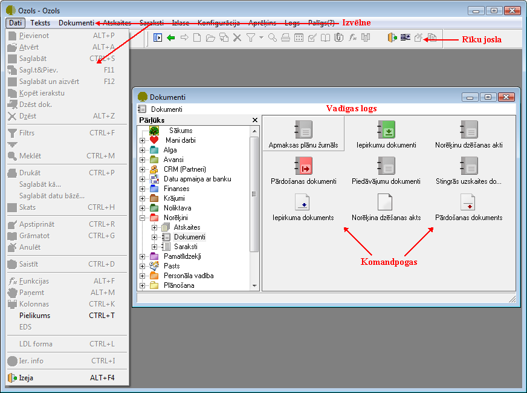

Darbs ar programmu¶
Programmas atvēršana¶
Palaižot programmatūru, tiek atvērta lietotāja reģistrācijas ekrāna forma:

Lietojot izvēli Windows NT autentifikācija, automātiski tiek izmantota lietotāja datortīkla parole. Lietojot izvēli SQL autentifikācija, laukā Lietotājs jāieraksta administratora piešķirtais lietotāja vārds un laukā Parole – administratora piešķirtā lietotāja parole.
Atkarībā no uzņēmuma datortīkla konfigurācijas, Windows NT autentifikācija var nebūt iespējama, un tiks parādīts paziņojums, ka savienojumu nav iespējams izveidot. Šādā gadījumā jāizmanto SQL autentifikācija.
Pēc darba uzsākšanas tiks atvērta datorprogramma Ozols, kurā atvērsies vadības logs:
{kind=link}
Galveno darba režīmu aktivizēšanai jālieto izvēlni (menu). Visi pieejamie darba režīmi var tikt aktivizēti ar pārlūka palīdzību vadības loga kreisajā malā. Vadības loga labajā malā tiks parādītas attiecīgās sadaļas komandpogas žurnālu vai darba režīmu aktivizēšanai.
Lietotāju licenču, komponentu un uzņēmumu izmantošana¶
Vienlaicīgs lietotāju pieslēgums katram no komponentiem tiek ierobežots ar iegādāto licenču skaitu. Lietotājs var izmantot dažādu uzņēmumu datus. Uzņēmumu un komponentu datu lietošanu jānosaka sākot darbu ar sistēmu.
Pieteikšanās uzņēmuma un komponentu izmantošanai¶
Reģistrējoties sistēmā tiks parādīta komponentu izvēles ekrāna forma. Kolonnā licenču skaits parādās uzņēmuma iegādāto licenču skaits. Komponentu izvēles ekrāna formā redzams, kuras komponentes var izmantot. Ja licenču skaits ir vienāds ar izmantoto licenču skaitu, tad pieslēgties šādam komponentam nebūs iespējams, jo jau tiek izmantotas visas iegādātās licences. Uzklikšķinot uz komponenta ieraksta, tiek atvērta informatīva ekrāna forma, kurā redzams, kuri lietotāji izmanto komponenta licences.

Ja lietotāju ir vairāk, nekā iegādāto licenču un vienlaicīgs darbs ar komponentiem visiem nav iespējams, tad ekrāna formā (>Palīgs > Komponenti un uzņēmuma izvēle) jāaktivizē komanda Rādīt komponentu izvēli sākot darbu.
Laukā Uzņēmums tiek parādīts uzņēmums, kura datiem lietotājs vēlas pieslēgties. Ja lietotājam ir pieejami vairāku uzņēmumu dati, tad sākot darbu ar sistēmu jānorāda viens uzņēmums – tas, kuram tiks veikta datu ievade un apstrāde.

Lai varētu veidot jaunus dokumentus, lietotājam sākot darbu ar sistēmu jānorāda viens uzņēmums, kura dati tiks lietoti.
Lai parādītu visus lietotājam pieejamos uzņēmumu datus vienlaicīgi, jāaktivizē komanda Rādīt sarakstos visus pieejamos uzņēmumus. Šajā darba režīmā dokumentu žurnālos un atskaitēs varēs iegūt kopsavilkuma datus par visiem lietotāja uzņēmumiem, bet pievienot jaunus dokuments varēs tam uzņēmumam, kas uzsākot darbu norādīts laukā Uzņēmums.
Uzņēmuma maiņa¶
Ja lietotājs ir strādājis ar programmu un lietojis izvēlēto komponentu darba režīmus un noteikta uzņēmuma datus, tad pārslēgties uz cita uzņēmuma datiem var no darba režīma:
>Palīgs >Uzņēmuma izvēle
Lai pārslēgtos uz cita uzņēmuma datiem, jāizvēlas uzņēmums laukā Uzņēmums un var izmantot iespēju parādīt visu uzņēmumu datus kopā, aktivizējot komandu Rādīt sarakstos visus pieejamos uzņēmumus.
Izmantoto komponentu licence¶
Ir iespējams no pārlūka vai no izvēlnes atvērt sarakstu, kurā ir attēloti programmā pieejamo komponentu saraksts:
Komponentu licenču skaits;
Izmantoto licenču skaits;
Licenču bilance;
Lietotāji kuri ir reģistrējušies sistēmā.
{kind=link}
Programmas aizvēršana¶
Pārtraucot darbu ar datu bāzi uz ilgāku laiku, programma ir jāaizver. Lai beigtu darbu ar programmu, jālieto komanda no izvēlnes
>Dati > Izeja
Programmu var aizvērt arī uzklikšķinot uz ekrāna formas pogas X vai arī lietojot rīku joslas komandu
{kind=link}
Pirms programmas aizvēršanas, tiks uzdots jautājums par to, vai beigt darbu ar programmu. Spiežot komandpogu Jā, programma tiks aizvērta.